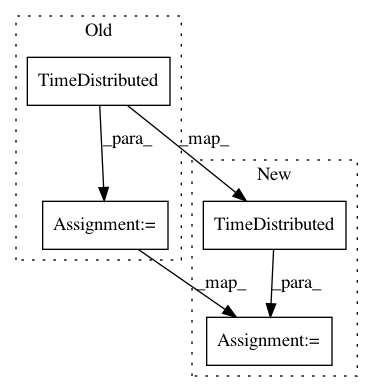

a066c15e83c261e9e677bde3ada85ff35a72a94c,allennlp/models/coreference_resolution/coref.py,CoreferenceResolver,__init__,#CoreferenceResolver#Any#Any#Any#Any#Any#Any#Any#Any#Any#Any#Any#,62
Before Change
self._text_field_embedder = text_field_embedder
self._context_layer = context_layer
self._antecedent_feedforward = TimeDistributed(antecedent_feedforward)
feedforward_scorer = torch.nn.Sequential(
TimeDistributed(mention_feedforward),
TimeDistributed(torch.nn.Linear(mention_feedforward.get_output_dim(), 1)),
)
self._mention_pruner = Pruner(feedforward_scorer)
self._antecedent_scorer = TimeDistributed(
torch.nn.Linear(antecedent_feedforward.get_output_dim(), 1)
)
After Change
self._text_field_embedder = text_field_embedder
self._context_layer = context_layer
self._mention_feedforward = TimeDistributed(mention_feedforward)
self._mention_scorer = TimeDistributed(
torch.nn.Linear(mention_feedforward.get_output_dim(), 1)
)
self._antecedent_feedforward = TimeDistributed(antecedent_feedforward)
self._antecedent_scorer = TimeDistributed(
torch.nn.Linear(antecedent_feedforward.get_output_dim(), 1)
)
In pattern: SUPERPATTERN
Frequency: 3
Non-data size: 4
Instances
Project Name: allenai/allennlp
Commit Name: a066c15e83c261e9e677bde3ada85ff35a72a94c
Time: 2020-02-25
Author: wuzhaofeng1997@gmail.com
File Name: allennlp/models/coreference_resolution/coref.py
Class Name: CoreferenceResolver
Method Name: __init__
Project Name: allenai/allennlp
Commit Name: 7915c28132fc61d1eb7e16aedcd653c9622d46be
Time: 2018-02-05
Author: markn@allenai.org
File Name: allennlp/models/coreference_resolution/coref.py
Class Name: CoreferenceResolver
Method Name: __init__
Project Name: Ghadjeres/DeepBach
Commit Name: 07151a9f75307c7109ffc2bca0aef137a82bcf20
Time: 2017-01-09
Author: hadjeres.g@gmail.com
File Name: deepBach.py
Class Name:
Method Name: skip